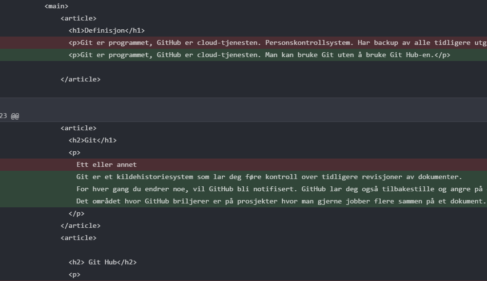
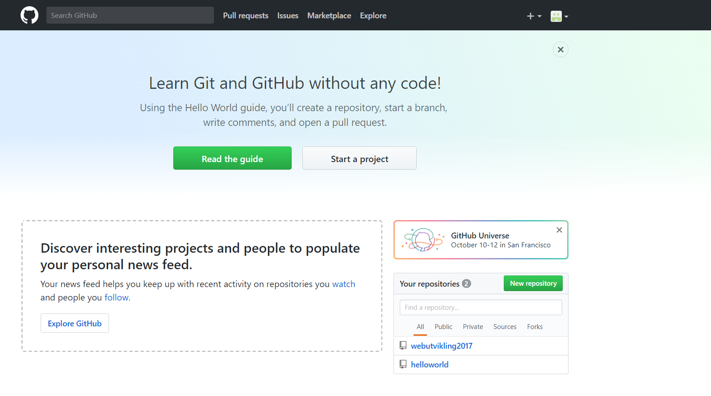
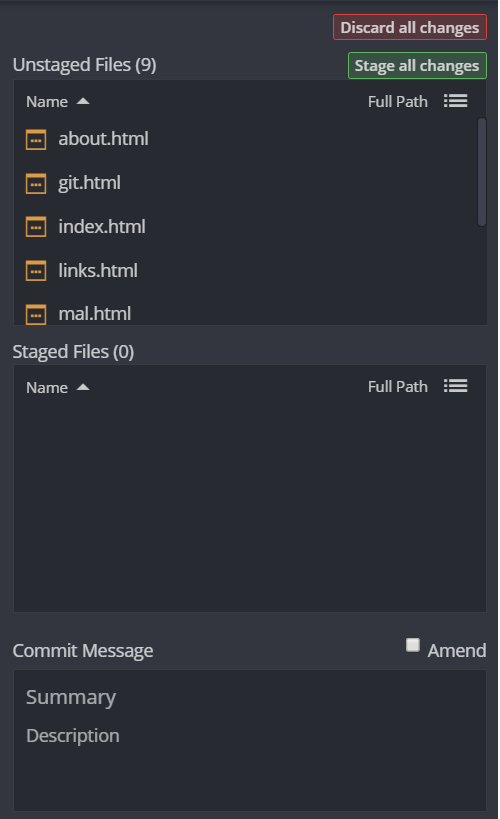
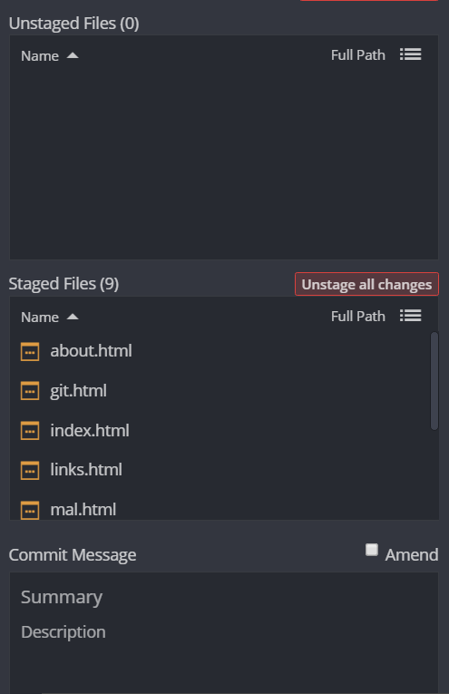
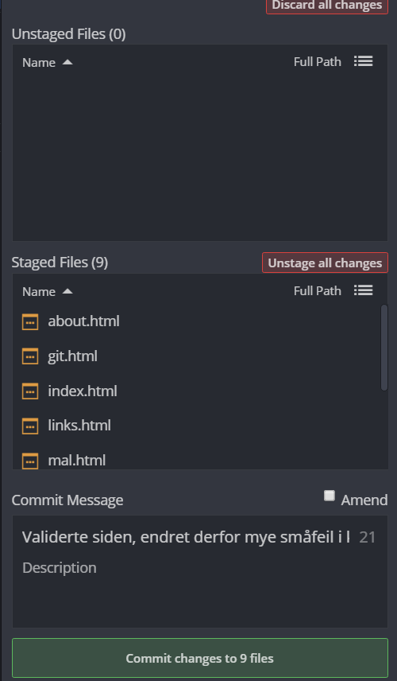
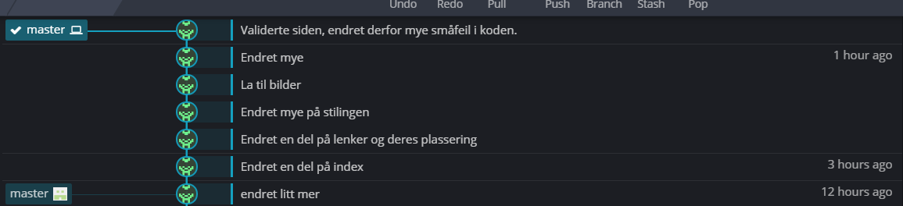
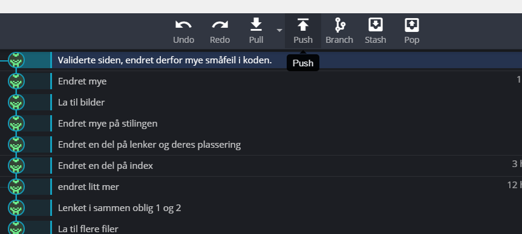

Git/GitHub

Git
Git er et kildehistoriesystem som lar deg føre kontroll over tidligere revisjoner av dokumenter. Git er programmet, mens Github er samarbeidssystemet. Git er på ingen måte et tekstredigeringsprogram, dette skjer i en annen editor.
Man kan bruke Git uten å bruke Git Hub-en.
Git Hub
Git Hub er selve sky-tjenesten. For hver gang du endrer noe, vil GitHub bli notifisert. GitHub lar deg også tilbakestille og angre på endringer.
Det området hvor GitHub briljerer er på prosjekter hvor man gjerne jobber flere sammen på et dokument. Her vil man kunne se hva
ulike folk har gjort, og kan også enkelt flette sammen endringer som kolliderer.

Hvordan bruke GitHub

Man begynner ved å lage en bruker på GitHub.com, deretter lager man et repository på "open repo" i programmet.
For å bruke Git Hub kan man enten bruke kommandolinja, eller bruke et grafisk brukergrensesnitt (GUI).
Jeg har god peiling på kommandolinja ifra tidligere år med DOS, men har i denne omgang valgt å bruke GitKraken.
For å endre en fil, vil man måtte "stage" den såkalte filen.


Dette etterfølges av en commitment.

Bildet nedenfor viser hvordan commit-historikken vil se ut etter at vi er ferdige med denne sekvensen

for deretter å bruke "push" (Laste filen opp på filserveren). Antonymet til Push er pull som da er å få filen tilbake ifra slik den var på serveren.

Dersom den andre partneren vår ønsker filene, vil denne måtte trykke "clone", som da er å lage en klone av repositoriet.
Dette gjøres enkelt ved clone og URL. https://github.com/adntob/webutvikling2017/
For at denne skal kunne endre siden vil det kreves brukerrettigheter. En uavhengig tredjepart kan dermed ikke endre vårt innhold.